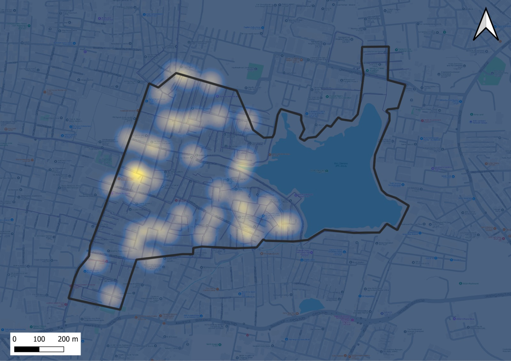
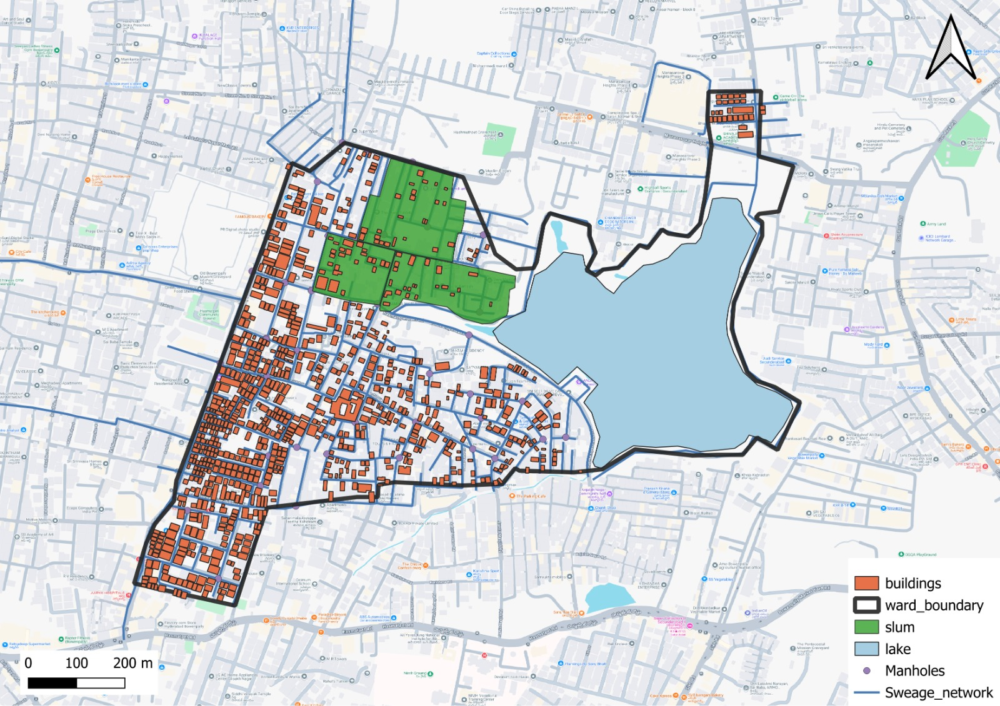
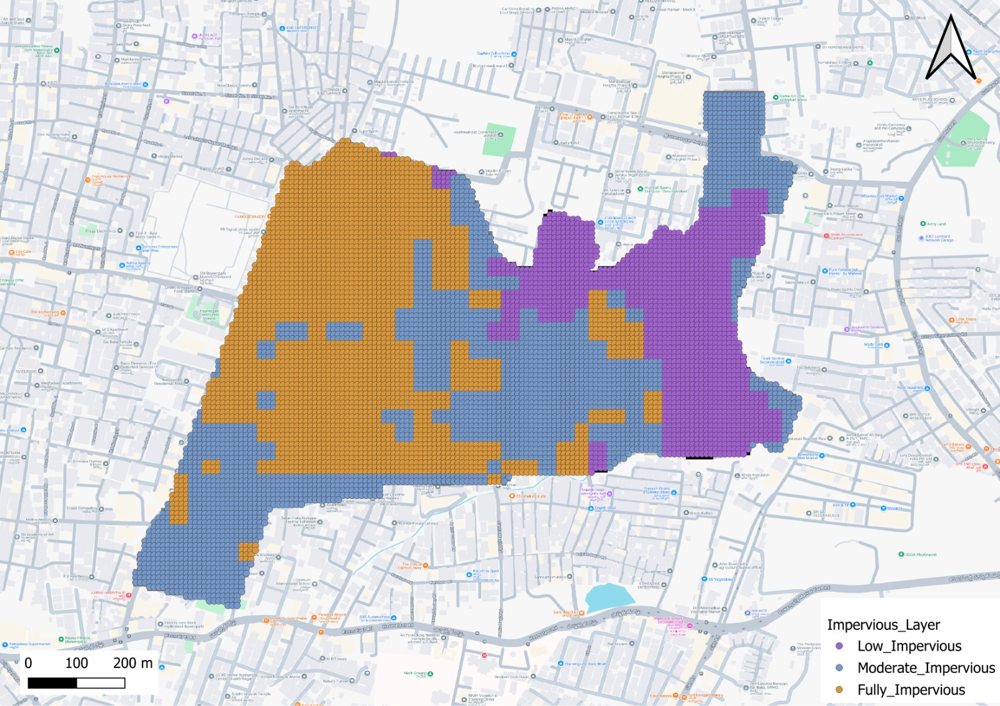
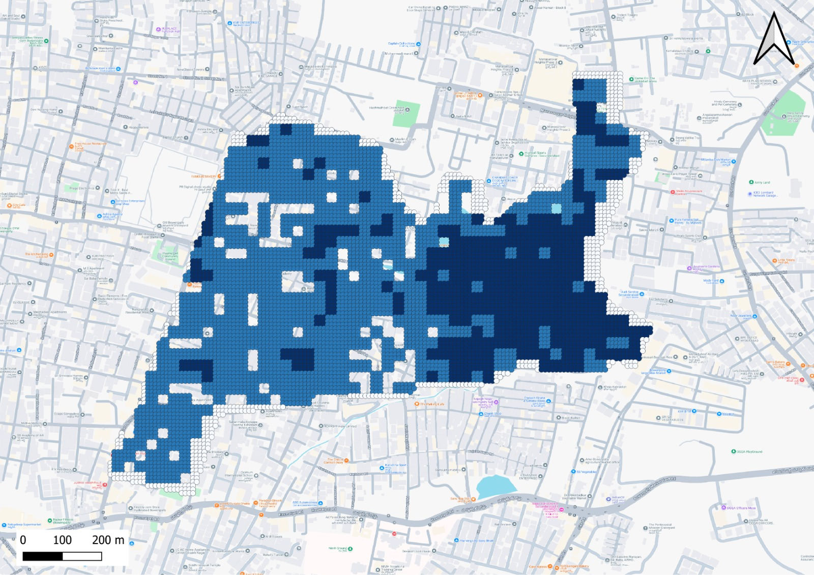

Ward Report
Comprehensive analysis of manhole network, operational records, and area data for Hasmathpet, Hyderabad.
Geographical and Land Use Analysis
Ward Area Overview
The total area of the Hasmathpet ward is 726,916.255 sq m.
The total identified slum area is 82,350.66 sq m, which includes three distinct areas. The water body has an area of 178,908.154 sq m and a perimeter of 2,273.81 m.
Ward Map with Hotspots
Ward Map with Robo Deployment
Distribution of Land Use within the Ward
Comparative Slum Area Sizes
Maps of Hasmathpet Ward
Land Use Map

Impervious Layer Map
Slope Map
Network and Manhole Health Overview
Junction Type Distribution
Manhole Condition Distribution
Sewer Length by Area Type
Clogging Incidents by Junction Type
Operational Performance & Clogging Analysis
Average Waste Collected by Blockage Level
Average Operation Time by Robo
Detailed Data Insights
Top 5 Manholes by Clogging Incidents
| id | history_of_clogging_incidents | condition |
|---|---|---|
| MH-0016 | 8 | Good |
| MH-0049 | 8 | Good |
| MH-0025 | 8 | Good |
| MH-0024 | 8 | Fair |
| MH-0044 | 8 | Fair |
Sewer Area Summary
| area_name | type_of_area | sewer_length_km | num_robos_deployed |
|---|---|---|---|
| Hasmathpet, Hyderabad | Residential | 12.93 | 10 |
| Hasmathpet, Hyderabad | Slum | 12.87 | 10 |
| Hasmathpet, Hyderabad | Waterbody | 16.23 | 10 |
| Hasmathpet, Hyderabad | Residential | 11.84 | 10 |
| Hasmathpet, Hyderabad | Slum | 17.55 | 10 |
Predictive Analysis
Based on the analysis of past clogging incidents and network conditions, a predictive model has identified 20 manhole hotspots within the Hasmathpet ward. To effectively manage these critical areas, an operational fleet of 15 robots may be required to fulfill the increased demand, particularly during peak seasons or periods of heavy rainfall.